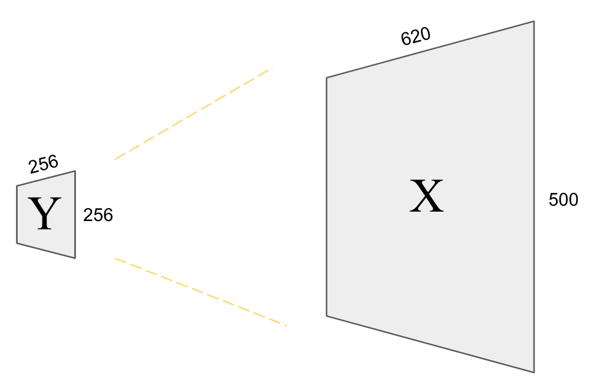
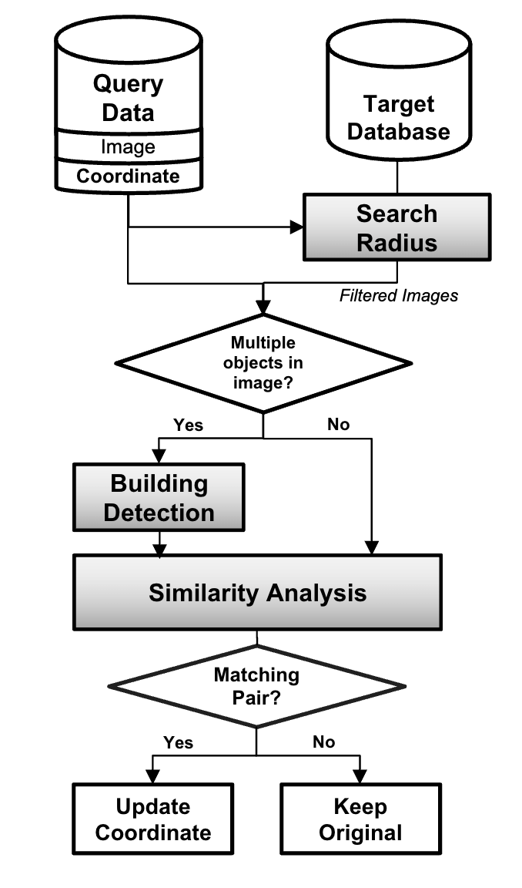
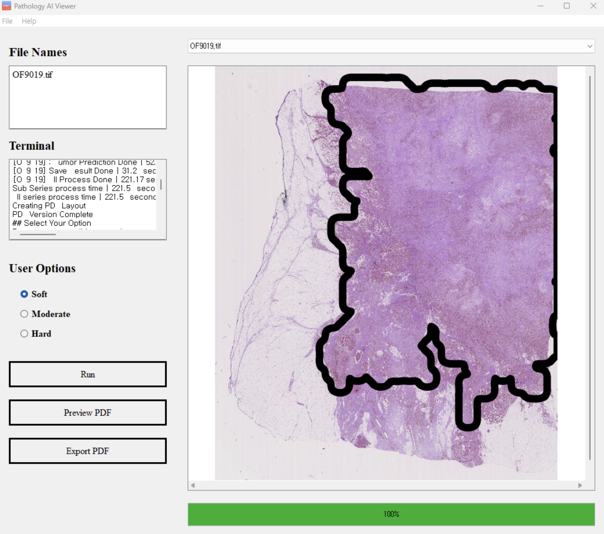

Research
A Transferable Real-World Dataset for Face Recognition in Lensless Imaging Systems
Junho Kim*, Salman S. Khan, Ashok Veeraraghavan
Keywords: Lensless Imaging, Image Reconstruction, Face Recognition

Enhancing Object Geolocations in Imagery to Improve Disaster Damage Mapping and Assessment
Junho Kim*, Sayok Bose, Sarah Brasseaux, Jooho Kim
Keywords: Object Detection, Image Retrieval, Perceptual Similarity

Evaluating Optimization-based Dexterous Functional Grasping
Junho Kim*, Claire Chen, Jeannette Bohg
Keywords: Dexterous Manipulation, Multi-Affordance, 3D Point Cloud Visualization

Deep Learning Models for Detecting Breast Cancer From Whole Slide Histopathological Images
Junho Kim*, ChangSeok Lee
Keywords: Convolutional Neural Networks, Object Detection, Object Classification
